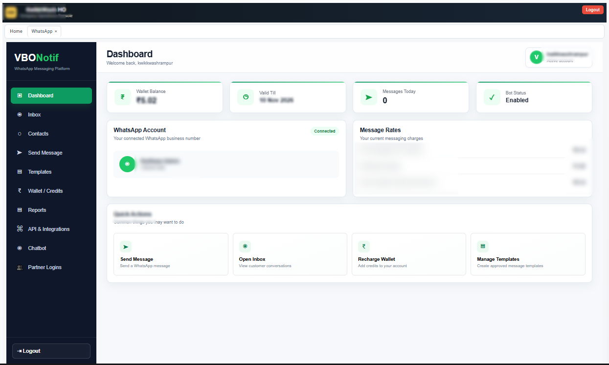
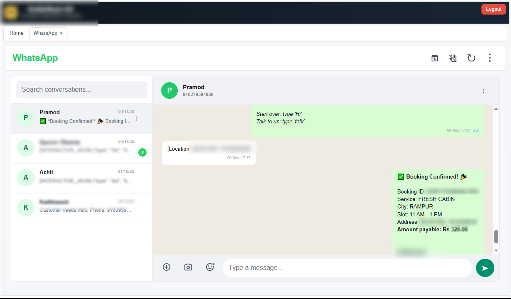

One number, multiple users
Work together from a shared WhatsApp inbox so customer conversations are easier to manage across team members.
Turn business conversations into an organized customer support and communication workflow. Give multiple team members access to a shared inbox, route enquiries to the right area team and automate routine replies.
Request a WhatsApp DemoFlexible, usage-based messaging and custom business plans. Pricing depends on setup and message category.
Real VBONotif screens showing the operations dashboard and shared WhatsApp inbox.


Work together from a shared WhatsApp inbox so customer conversations are easier to manage across team members.
Guide enquiries to the relevant city, area or partner through chatbot routing and human handoff workflows.
Build visual conversation flows, answer routine questions and integrate eligible workflows with your business systems.
Manage WhatsApp templates, contacts and contact groups, and schedule business messages subject to Meta platform rules.
Review messages, handle attachments and maintain organized customer interactions.
Use reporting, messaging history and wallet usage tools to keep communication costs and activity visible.
Set up the appropriate messaging, routing and integrations for your ISP, service business or multi-area team.
WhatsApp Business Platform setup, eligible conversation windows, templates, messaging charges and integration options depend on your configuration and applicable Meta requirements. No message-delivery outcome is guaranteed.
Clear answers about team inboxes, routing, automation, onboarding, pricing and support.
VBO Connect is a business communication platform for teams that handle customer conversations through the WhatsApp Business Platform. It brings authorised staff, shared conversations, routing rules, chatbot flows, templates, reports and administration into one managed workspace.
It is best suited to businesses where more than one person, branch, partner, franchise or department needs to handle WhatsApp enquiries with clear access and oversight.
Yes. Customers message one business number while authorised staff reply from their own VBO Connect access. Permissions and routing rules decide which conversations each person can see; administrators can supervise the conversations and configuration available to their business.
Team members do not need to share one password or keep passing a phone between them.
Often yes, but eligibility depends on who owns the number, its current WhatsApp setup, access to the related Meta business assets and Meta's onboarding rules at that time. Some numbers may require migration or a supported coexistence setup.
Before any change: we review the current setup and explain the expected impact. A number is not migrated merely to provide a demo.
This depends on the number's present setup and the coexistence options supported by Meta for that account. In some onboarding paths the mobile app can continue with limitations; in others the number moves to the WhatsApp Business Platform workflow.
We confirm the available path before activation so your team understands what will change.
VBO Connect can use customer selections and configured rules to direct a conversation to the relevant city, branch, department, partner or franchise inbox. For example, a Lucknow enquiry can go to the Lucknow team while a billing question goes to accounts.
Routing is based on information collected from the customer and rules approved by your business; it is not automatic guesswork. Authorised agents can transfer a chat when another team should handle it.
The chatbot can welcome customers, present predefined choices, collect enquiry details, answer configured questions and start routing or integration steps. Admins can maintain the supported flow through a visual builder.
Its answers are limited to the content and workflow configured for your business. It should not be presented as understanding every open-ended question or making decisions that require a human.
A configured handoff can move the conversation from automation to an authorised agent. Human staff should handle complex questions, complaints, exceptions, approvals, commitments and final business decisions.
While a handoff is active, the workflow can be configured to pause automated replies so the customer is not answered by both the bot and the team at the same time.
WhatsApp applies its own messaging rules. After a customer messages your business, normal replies are generally allowed during the active customer-service window. Outside that window, a suitable Meta-approved template is usually required to start or continue business-initiated communication.
Template approval, category, delivery and policy decisions are controlled by Meta. VBO Connect helps your team use the configured templates but cannot override WhatsApp policies.
Configured and approved templates can be used for legitimate business messages such as reminders, updates or opted-in promotions. Your business remains responsible for valid customer consent, accurate recipient data, opt-out handling and compliance with WhatsApp policies and applicable law.
Sending limits, template status, quality controls and delivery decisions remain subject to Meta.
API and workflow integrations are possible where the other system provides suitable, authorised access. Typical use cases include sending approved notifications, collecting enquiry data or connecting a customer choice to an existing business workflow.
We review the required data, security, error handling and ownership before confirming the integration scope. An integration is quoted separately when custom work is needed.
Each client is configured with separate account access and data storage. Authorised users receive access according to their role or routing rules, and administrators manage the users and visibility available to their organisation.
Your business should promptly remove former staff, protect login access, collect only necessary customer data and define appropriate retention and privacy practices.
Setup normally starts with the business name, intended WhatsApp number, Meta business access, team structure, routing needs, required templates and a simple description of the customer journey. Integrations may require additional technical access from the relevant system owner.
The timeline depends on readiness, workflow complexity and Meta verification or template approval. We confirm a practical scope and sequence after reviewing these details rather than promising a fixed activation time in advance.
VBO Connect pricing depends on the agreed setup and operating needs, such as team access, routing, chatbot complexity, support and integrations. Any VBO setup, subscription, wallet or service charges are explained in the proposal.
WhatsApp Business Platform messaging charges follow Meta's current pricing and actual usage. Unless a proposal clearly says otherwise, Meta-related messaging costs should not be assumed to be included as a fixed unlimited amount.
Support covers the VBO Connect scope agreed for your business, such as access, configured workflows and platform issues. Meta verification, template review, delivery or account-quality decisions may require information from Meta and are not controlled directly by VBO Connect.
For faster help, share the affected business account, approximate time, recipient (masked where appropriate), message type and a screenshot or error reference. Never send passwords, OTPs, API keys or full access tokens.
No matching answer found. Try a shorter search, or contact us for help.
Tell us about your message volume, team size, service areas and required integrations. We can help scope the right solution.
Request a Personalized Demo